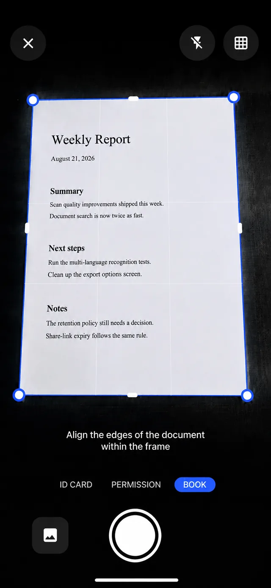
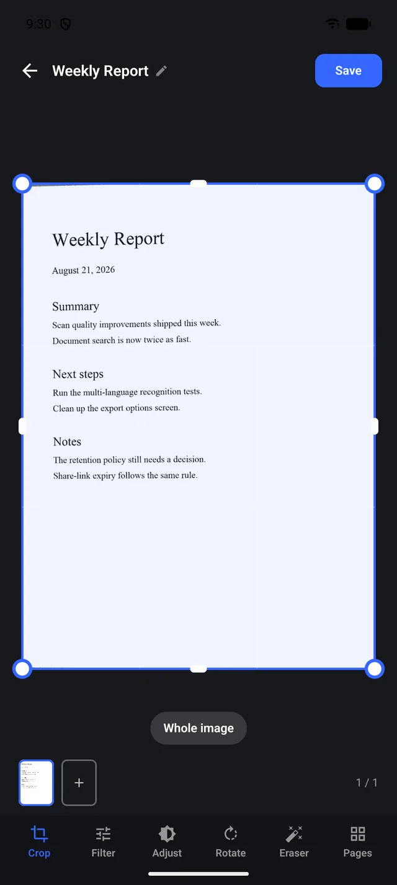
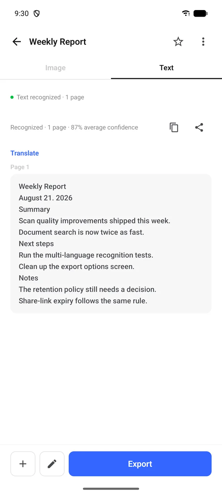
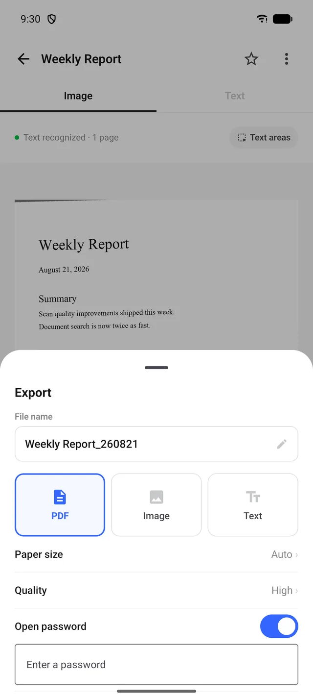
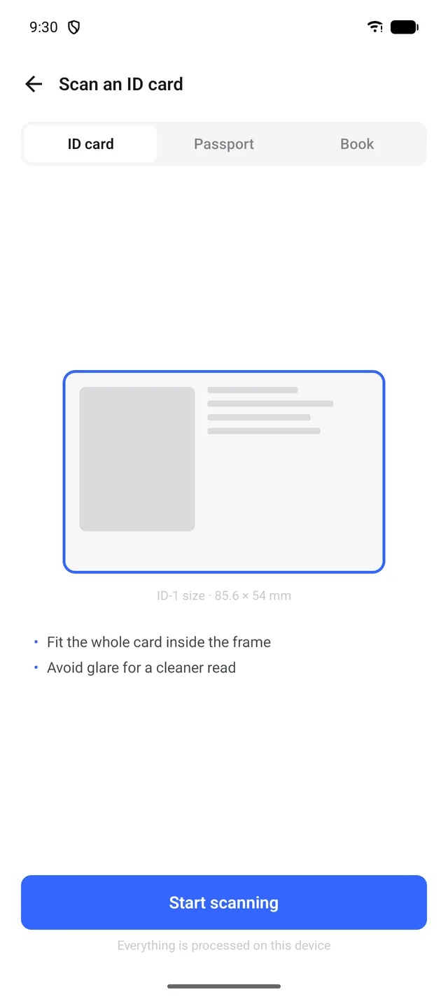

Shoot a document,
get text.
Auto corner detection snaps the page, OCR pulls the text, and PDF export finishes the job. Everything happens on your device.

Scan to export, in one flow
Auto corner detection
Finds document corners in real time and squares the page. Flash, grid and gallery import included.
OCR text recognition
Per-page results with average confidence, flowing straight into copy, share and translate.
ID · passport · book modes
An ID-1 size guide frames cards precisely, with passport and book modes alongside.
Smart export
Export as PDF, image or text with paper size and quality options — plus view passwords and watermarks.
Multi-page documents
Keep adding pages, then refine each one with crop, filters, rotate and eraser.
On-device processing
Scanning, recognition and storage all happen on your device. Documents never leave it.
See it in action
Swipe through →




Frequently asked questions
Are my documents sent to a server?
No. Scanning, OCR and storage all happen on your device — documents never leave it.
What export formats are supported?
PDF, image and text. PDFs support paper size and quality settings, plus a view password and watermark.
Is ID scanning safe?
ID and passport scans are processed on-device just like any document. Shooting away from glare improves recognition.
Can I scan multi-page documents?
Yes. Keep adding pages into one document and refine each with crop, filters and rotation.
Where do I send questions?
Email us at h1.soft.x001@gmail.com.